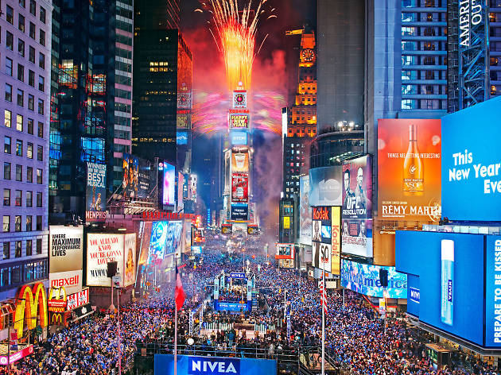
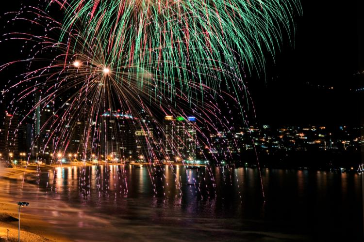
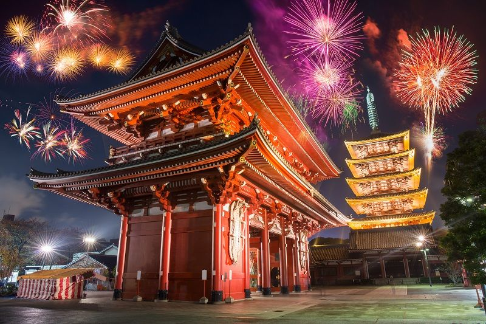
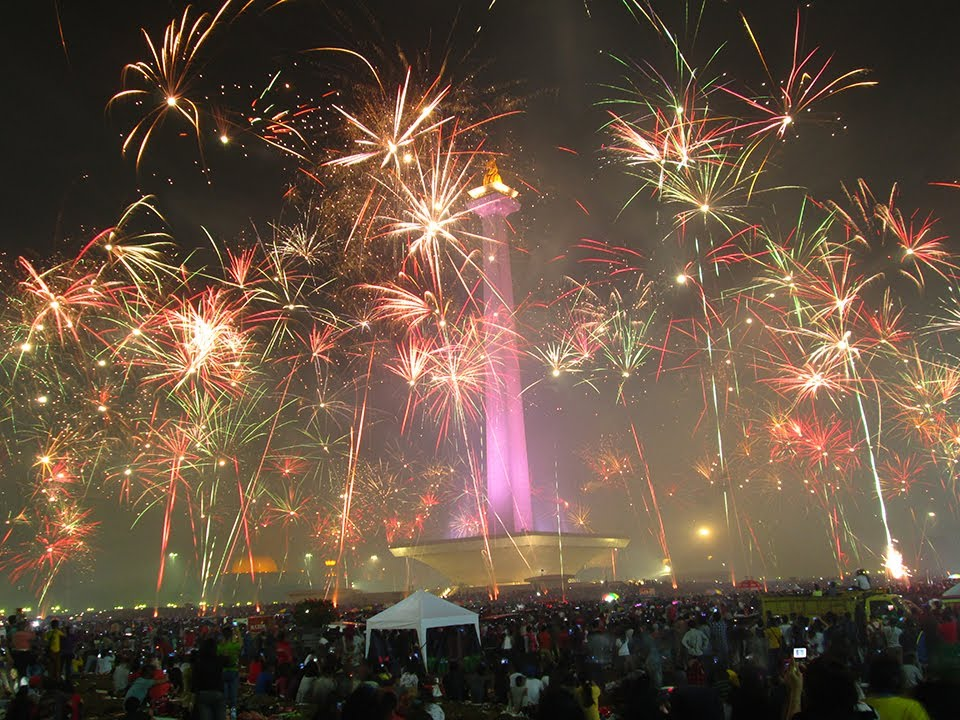

New Year Festival
New Year Festival atau disebut juga New Year Eve Festival adalah pesta untuk merayakan pergantian tahun.
New Year Eve Festival ini diadakan setiap tengah malam di tanggal 31 Desember.
Pesta perayaan tahun baru ini diadakan dengan cara berbeda di setiap negara. Sebagai contoh, perayaan New Year Eve di Amerika Serikat ditandai dengan turunnya Big Apple di One Times Square, New York City.
Pada jam 23:59:00, bola kristal akan dilepaskan dari puncak One Times Square dan bola kristal berisi lampu-lampu itu akan sampai di bagian bawah tepat saat pergantian tahun.
Sementara di Meksiko, pada saat New Year Eve Festival ini orang-orang akan memakan 12 buah anggur sambil membunyikan lonceng gereja saat menjelang tahun baru.
Di Jepang, orang merayakan New Year Eve dengan makan soba dan ikan sarden. Mereka juga akan bergadang sepanjang malam tahun baru sampai keesokan pagi untuk menyambut dewa tahun baru.
Dan di Indonesia, orang akan mengitari jalanan sambil membunyikan terompet dan kembang api. Pusat perayaan berada di Monas dan Ancol.
